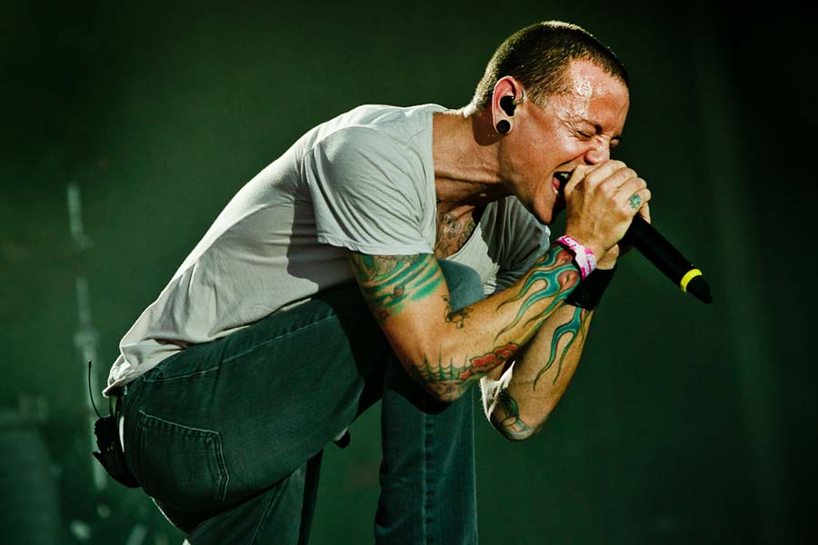
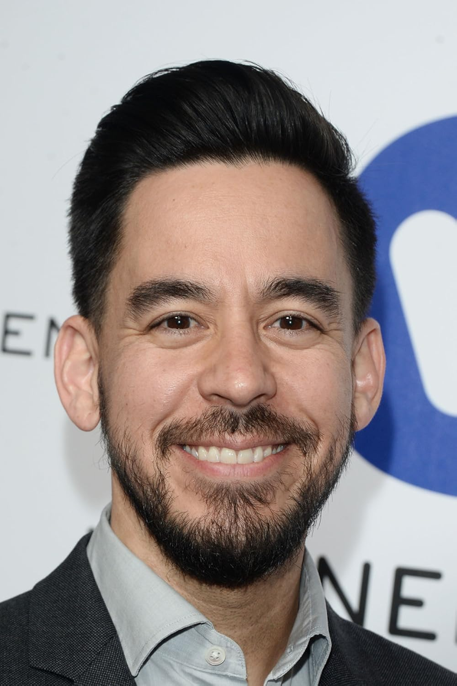
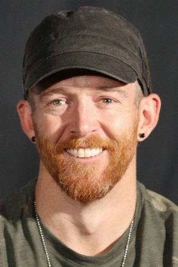
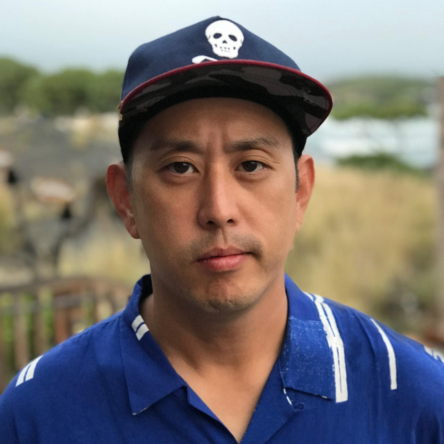
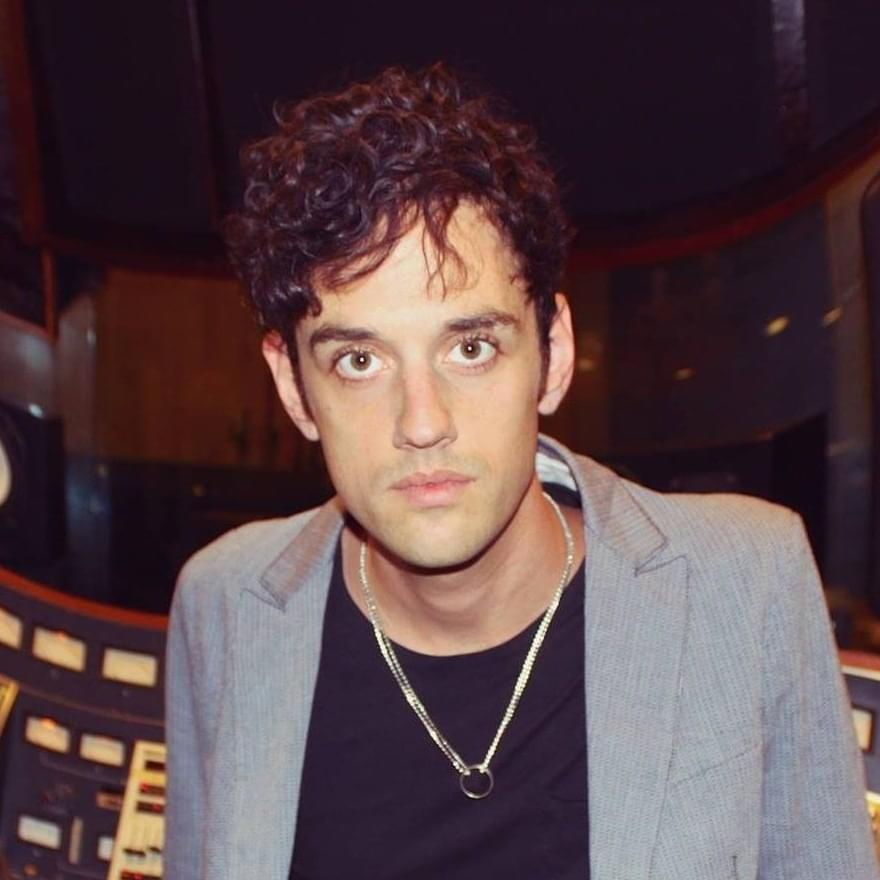
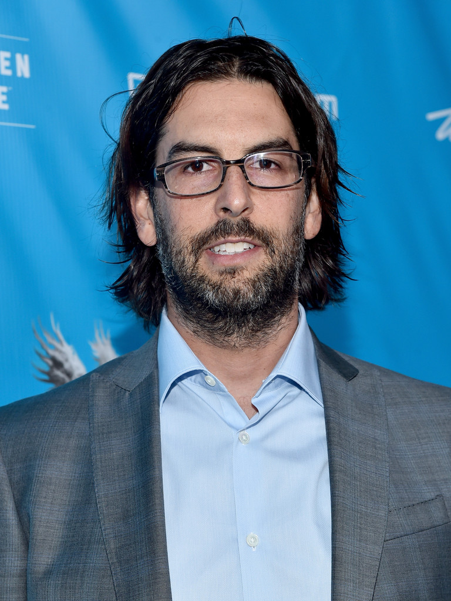
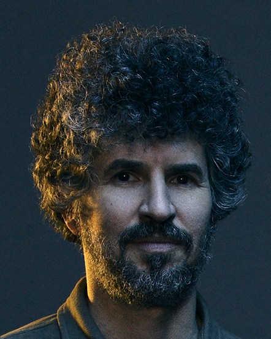

Biografia de los integrantes de la banda
Chester Bennington (1976-2017)

- Nacido el 20 de marzo de 1976, Phoenix, Arizona, Estados Unidos, fue un cantante, compositor y músico estadounidense, conocido por ser el vocalista principal y compositor de la banda Linkin Park.
También fue el vocalista principal de las bandas Grey Daze, Dead by Sunrise y Stone Temple Pilots.
- Su madre era enfermera, mientras que su padre era un detective de la policía que trabajó en casos de abuso sexual infantil.
- Chester Bennington sufrió de abuso sexual por parte de un conocido mayor cuando tenía siete años.
Tenía miedo de pedir ayuda porque no quería que la gente pensara que era homosexual o mentía.
- Sus padres se divorciaron cuando tenía 11 años. Para consolarse, dibujó y escribió poesía y canciones.
- Por el abuso que sufria y el divorcio de sus padres, Bennington comenzó a abusar del consumo de marihuana, alcohol, opio, cocaína, metanfetaminas y LSD.
- Trabajó en un Burger King antes de comenzar su carrera como músico profesional.
Eventualmente, Chester Bennington pudo superar su adicción a las drogas y luego denunció el uso de drogas en futuras entrevistas.
- Chester Bennington luchó contra la depresión y el abuso de sustancias durante la mayor parte de su vida, desde su niñez.
Lamentablemente, el 20 de julio de 2017 fue encontrado muerto en su casa de Palos Verdes Estates, California; su muerte fue declarada suicidio por ahorcamiento.
Emily Armstrong

- Emily Marcia Armstrong (Los Ángeles, California, 6 de mayo de 1986) es una cantante, música y compositora estadounidense, conocida por ser la vocalista principal de la banda Linkin Park desde 2024.
También es cofundadora y miembro de la banda Dead Sara.
- Sus padres eran miembros destacados de la Iglesia de la Cienciología y ella fue criada como ciencióloga. Comenzó a componer canciones con la guitarra cuando tenía 11 años, y a cantar cuando tenía 15.
- Abandonó la escuela secundaria, sabiendo que quería estar en una banda de rock tan pronto como tomó la guitarra por primera vez, sin interés en dedicarse a otra cosa.
En una entrevista con El Paso Times en 2012, Armstrong dijo que la música era lo único que la mantenía motivada en la vida.
- Armstrong ha estado en el foco de las críticas por las diversas polémicas en las que se ha visto envuelta, como su conexión con la Cienciología y el apoyo que otorgó al actor Danny Masterson después de haber sido condenado a 30 años de prisión por violación.
Por su parte, Armstrong se pronunció ante todas las críticas, asegurando que no aprueba ningún abuso contra la mujer; sin embargo, no mencionó su relación con la Cienciología.
Mike Shinoda

- Es un músico, multinstrumentista y productor discográfico estadounidense, conocido principalmente por ser rapero, compositor, guitarrista rítmico y tecladista de la banda Linkin Park.
- Mike Shinoda nació el 11 de febrero de 1977 en Panorama City, California y se crio en Agoura Hills, California.
Su padre es japonés-estadounidense.Tiene un hermano menor llamado Jason. Fue criado como un protestante liberal.
- La madre de Shinoda lo animó a tomar lecciones de piano clásico cuando tenía seis años.
A los 13, expresó el deseo de pasar a tocar jazz, blues y hip hop. Más tarde agregó la guitarra y la voz de estilo rap a su repertorio durante sus años de escuela secundaria y preparatoria.
- Shinoda formó Xero, que luego se convirtió en Linkin Park, con dos de sus amigos de la escuela secundaria en 1996. Chester Bennington se unió a Linkin Park en 1999, reemplazando a Wakefield como vocalista principal.
Más tarde, la banda firmó un contrato discográfico con Warner Bros Records.
Dave Farrel

- Más conocido como Phoenix, es el bajista de la banda Linkin Park.
- Dave Farrell nació en Plymouth, Massachusetts pero más tarde se mudó a Mission Viejo, California cuando tenía cinco años. Se graduó en la Universidad de California.
Toca el bajo, la guitarra eléctrica, el chelo y el violín.
- Farrell ha declarado que sus influencias han sido Weezer, The Beatles, Deftones, Pink floyd, Guns N Roses, The Smiths, Hughes y Wagner.
Joseph Hahn

- De nombre artístico Joe Hahn, es un DJ, director, artista visual y productor discográfico estadounidense, conocido por su papel en Linkin Park,
dedicándose al scratching, tocadiscos, sampleo y programación de los ocho álbumes de estudio del grupo.
- "Joe" Hahn nació en Dallas, Texas el 15 de marzo de 1977 pero creció en Glendale, California.
Hahn es coreano-estadounidense de segunda generación.
- Hahn se unió a Linkin Park, llamada en ese entonces Xero, en 1997 como el DJ de la banda. Desde entonces, él ha dirigido la mayoría de los videos musicales de la banda.
- Hahn, junto con su compañero de banda Mike Shinoda, es responsable de la mayor parte de las ilustraciones de los álbumes de Linkin Park.
Colin Brittain

- Nacido en Knoxville, el 29 de diciembre de 1986, es un compositor, productor y músico estadounidense.
- Es el baterista de la banda Linkin Park desde 2024.
- Ha escrito y producido para artistas como Papa Roach, Hands Like Houses, Basement, Dashboard Confessional, 5 Seconds of Summer, Miyavi y One Ok Rock.
- En 2024, se unió a Linkin Park como su nuevo baterista, después de que el baterista original Bourdon se negara a continuar con la banda.
Rob Bourdon

- Es un músico estadounidense, conocido por haber sido el baterista de la banda Linkin Park.
- Gregory Bourdon nació el 20 de enero de 1979 en Calabasas, California.
- Rob comenzó a tocar la batería a la edad de 10 años tras ver un concierto de Aerosmith.
Ya que su madre, Patty, fue la exnovia de Joey Kramer, el baterista de Aerosmith, Bourdon pudo estar en el backstage y ver toda la producción.
- En sus primeros años de adolescencia, Bourdon tocó en algunas bandas con sus amigos. Fue en esa época que conoció a su actual compañero de banda Linkin Park, Brad Delson.
- En 1995 Delson, Mike Shinoda y Bourdon formaron Xero que se convertiría en el punto de partida para Linkin Park.
Brad Delson

- Nacido en Agoura, Los Angeles, California el 1 de diciembre de 1977, es músico estadounidense, conocido por ser el guitarrista líder de la banda Linkin Park.
- Brad Delson asistió a la Escuela Superior de Agoura con su amigo de la infancia y compañero de banda Linkin Park, Mike Shinoda.
- Tocó en varias bandas a lo largo de su carrera en la preparatoria, en la que conoció y se asoció con el baterista Rob Bourdon.
- Después de graduarse en 1995, Delson, Shinoda, y Bourdon formaron Xero, que finalmente se convertiría en el punto de partida para Linkin Park.
- Fue miembro de Phi Beta Kappa, y compartió un dormitorio con el futuro compañero de banda Linkin Park, Dave Farrell tres de sus cuatro años en la escuela, Farrell le mostró como tocar el bajo, y así también aprendió como tocar el bajo.
- Delson tuvo la oportunidad de hacer una pasantía con un miembro de la industria de la música como parte de sus estudios y terminó trabajando para Jeff Blue, un representante de A & R de Warner Bros.
Blue ayudaria a la banda más tarde introduciendo a Chester Bennington en la formación y dándoles el contrato discográfico con Warner.
- Después de graduarse en 1999, Delson decidió renunciar a la facultad de derecho con el fin de seguir una carrera musical con Linkin Park.